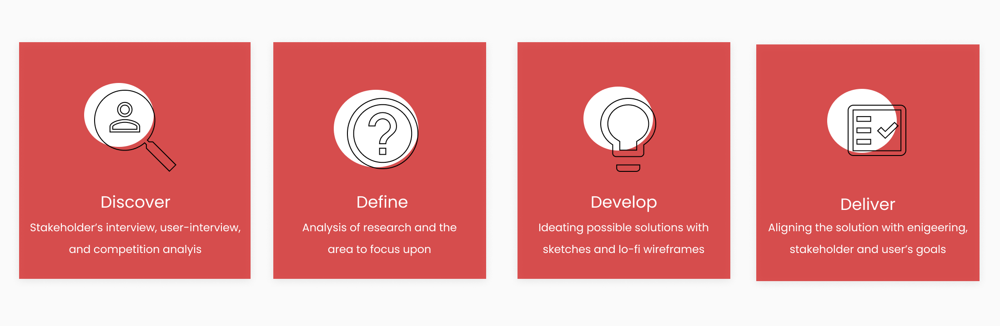
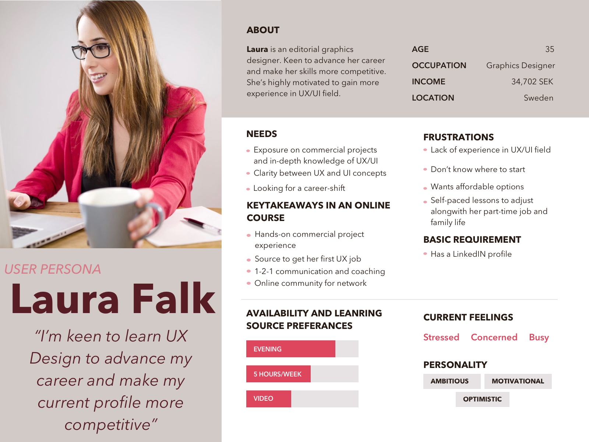
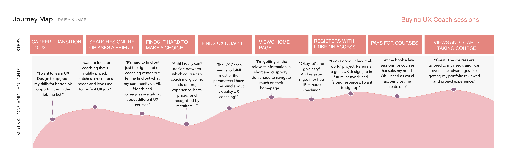

OVERVIEW:
Integral, a management consultant firm, has served world class clients with Design Thinking coaching, design and consultancy services since 2005. Working on one of their products, UX Design Mastery, was a herculean task for me. Later renamed as ‘UX Coach Me’.
I designed and conceptualised the whole on-boarding online experience for the target users. The users aim to learn UX Design from Integral, a U.K. based management consultancy firm.
THE GOAL
Design Challenge: Create an online onboarding experience for the candidates where they can access lessons and get rewarded.
The Solution: I designed a minimalist and intuitive dashboard navigation where candidates could access their lessons, interact and engage not just with the coach but also with the community.
MY ROLE IN THE TEAM:
UX Researcher
UX Designer
Conceptualization
Different UX methods used were:
My process was intensive with double-diamond approach where I worked in a remote team.
Double Diamond as you might be aware: is a structured design approach to tackle challenges in four phases:
Discover or Research— insight into the problem (diverging)
Define or Synthesis — the area to focus upon (converging)
Develop or Ideation— potential solutions (diverging)
Deliver or Implementation— solutions that work (converging)
User-Research
I started first with carrying on research on my user personas interviews, stakeholder interviews, technology and market analysis.
User-Persona Analysis
After my interviews with user-personas, I created a user-persona analysis mood-board. More personalised, real user-personas are useful as a reference while creating content structure, flow of the dashboard, UI kit, and designing the entire chain of engagement and usability.
A User-Persona, Laura Falk, wants to have the following with UX Coach:
Competition Analysis
After the research on user and interviewing the stakeholder, I dived further deep into the market analysis and current competitors of the client.

Customer Journey
In order to get to know the target users’ behaviour better, I created a Customer Journey Map.
Concept Description
My focus was to design a personalised online onboarding UX Coach platform with valuable resources and network. This way I wanted to give a personalised experience to a user.
I further went on to sketch out the possible solutions and carve out lo-fi wireframes on its basis. My aim was to shape up the navigation that is easy-to-use, a platform that is engaging, and rewarding.
Many cups of coffee and iterations were involved in the conceptualising phase. Towards the end, I chose to go on with the version which lets a user easily access lessons, engage with their preferred content like videos, chat with the coach via chatbox, feel rewarded.
Technical Considerations: In the initial design, the user Signs Up through Facebook. However, while I was in the designing and iterating phase of the prototype, Facebook made some technical changes. This brought technical complications for the app to sign up through Facebook. Hence, the final design has Sign Up where the first-time user has to register himself to access the courses.

The navigation and the features like chat with the coach, users being awarded on completion of each course (based on gamification concept), would be used in making. This project will go live in 2021. I'm excited! :)
Experience the product yourself here!
View Next Project: Application Development: Designing and Coding of Checklist App
Have a project in mind? Shoot me a message at daisykmr2@gmail.com
Let’s design something great today!